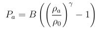
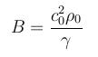

fix sph/pressure command¶
Syntax¶
fix ID group-ID sph/pressure style args
- ID, group-ID are documented in fix command
- sph/pressure = style name of this fix command
- style = absolut or relativ or Tait
- args = list of arguments for a particular style
absolut args = B B = coefficient relativ args = B density0 B = coefficient density0 = reference density Tait args = B density0 gamma B = coefficient density0 = reference density gamma = isentropic exponent
Examples¶
fix pressure all sph/pressure absolut
fix pressure all sph/pressure Tait 60000. 1000. 7.
Description¶
The equation of state (EOS) for the SPH calculation is the link between the density field and the pressure field. A lot of different equations can be found in the literature.
The absolut style was the first implemented EOS. The calculation rule is

where ρ<sub>a</sub> is the density of particle a and B is the pressure prefactor.
The relativ style uses the rule

as EOS. B denotes the pressure prefactor and ρ<sub>0</sub> is the reference density.
In case of Tait style the rule
is applied. B denotes the pressure prefactor which is calculated by
where c<sub>0</sub> is the speed of sound of the material. ρ<sub>0</sub> is the reference density and γ is the isentropic exponent defined as cp/cv.
Note
Monaghan has found that the speed of sound could be artificially reduced. (Monaghan, 1994) Therefore, we can choose a greater time step. He argues that the minimum sound speed should be about ten times greater than the maximum expected flow speed. (Δρ < 1%)
Restart, fix_modify, output, run start/stop, minimize info¶
No informatino about this fix is written to binary restart files.
None of the fix_modify options are relevant to this fix.
No global scalar or vector or per_atom quantities are stored by this fix for access by various output commands.
No parameter of this fix can be used with the start/stop keywords of the run command.
This fix is not invoked during energy minimization.
Restrictions¶
One fix sph/density/summation (only dev-version) or sph/denstiy/continuity has to exist.